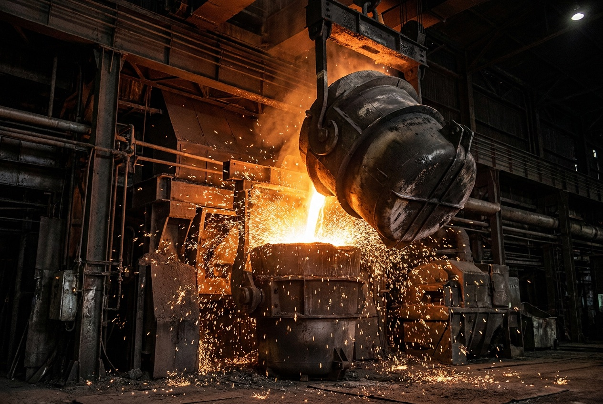
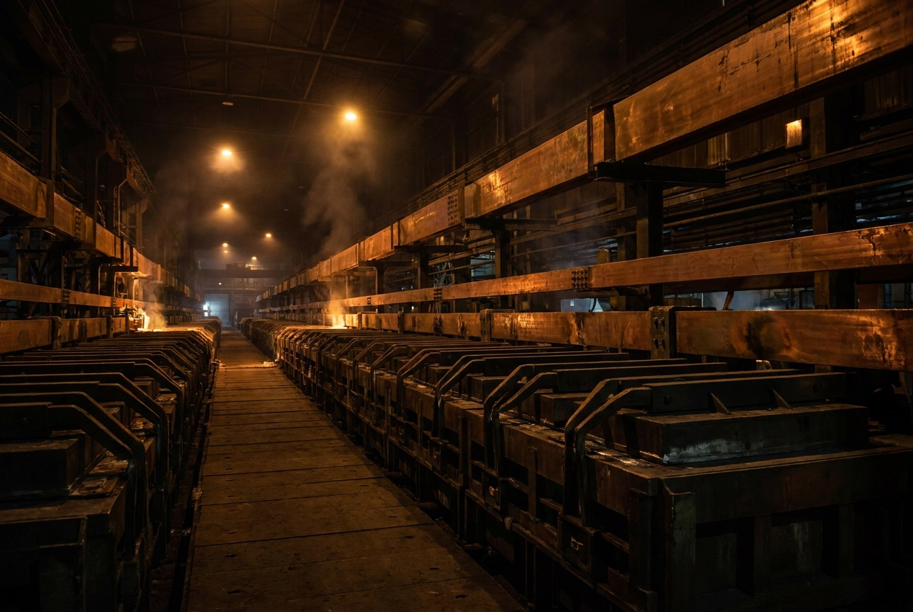
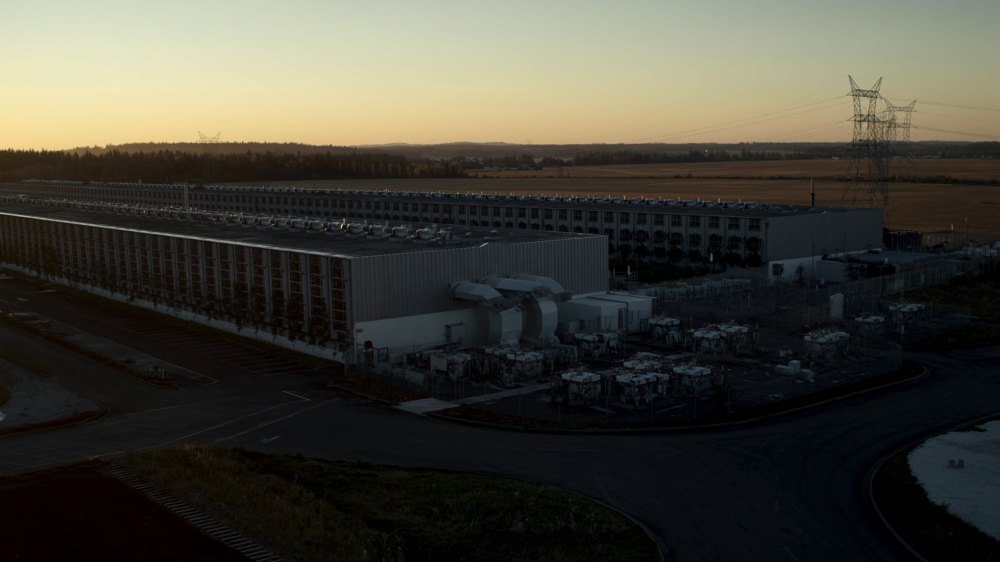
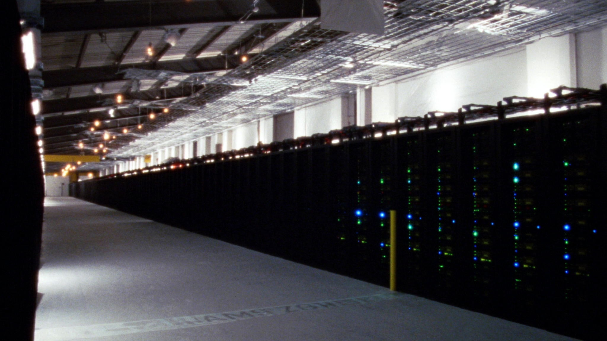

Steel
18% imported
Same three claims as the live slide (steel 18% imported, primary aluminum 85% imported, data centers 60% steel), now carried by imagery instead of a bare stat row. Each frame is a true 16:9 slide at deck proportions, so what you see is what would ship.



Data centers, reshored factories, housing, the grid. The build-out is here, and the key structural materials it runs on are increasingly not made here:

assets/gap-steel.jpg — ladle pour in a steel mill. Copied from
../supermill-presentation/assets/ind-steel-pour.jpg, already in the deck family.
assets/gap-aluminum.jpg — smelter potline. Copied from
../supermill-presentation/assets/ind-alum-potline.jpg. Warm ochres, closest match to the deck palette of anything on hand.
assets/dc-exterior-dusk.png and assets/dc-hall-conventional.png —
generated 2026-08-29 (Higgsfield soul_location), because every data-center image in the deck family is a
SUPERWOOD wood-hall render — the aspiration, not the problem. A wood data hall on the problem slide
gives the answer away eight slides early.
All four are license-clean for the deck: two are already ours, two are generated. No stock licensing to clear.
My pick: C. It changes least, and the image strip does the one job the current slide cannot — it makes "not made here" physical. A is the strongest visually but pushes the headline into the image, and the three claims stop being parallel with the "Also imported" table, which has nowhere to go. B is the best of the three if the lead paragraph has to stay.
Nothing here is wired into slides.html. Say which one and I will build it
into the deck properly — reveals, sources button, print rules and all.